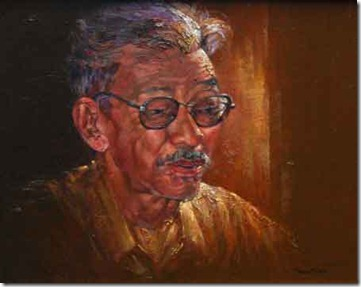

Chương Bốn

ộc giả chúng ta yêu thích Sơn Nam qua những quyển tập truyện phong tục như: ''Hương Rừng Cà Mau'', ''Hai Cõi U Minh'', ''Vọc Nước Giỡn Trăng''.... Nhưng anh còn viết những truyện dài có nghệ thuật cao hơn, cảm hoài thân thế cho những kẻ sinh bất phùng thời, làm cho người đọc không sao khỏi ngậm ngùi như ''Chim Quyên Xuống Đất'', ''Hình Bóng Cũ''...

Chân dung nhà văn Sơn Nam (tranh Phạm văn Châu)
Sơn Nam là một nhà văn rất sâu sắc về nhân tình thế thái. Tư tưởng và ý tình trong văn chương của anh không cần dựa một hệ thống tư tưởng triết học nào, một sở tri về tâm linh của một tôn giáo nào. Anh đi đây đi đó nhiều, nhất là đi ngao du khắp miền Hậu Giang, thu thập rất nhiều kinh nghiêm sống. Anh chiếm nghiệm những lời nói các bô lão về cuộc khai hoang khẩn đất ở miền Cực Nam và Tây Nam đất nưóc qua các quyển ''Tìm Hiểu Đất Hậu Giang'', ''Đồng Bằng Sông Cửu Long'', ''Văn Minh Miệt Vườn'', ''Lịch Sử Khẩn Hoang Miền Nam''... Anh rút tỉa những nhận xét đầy kinh nghiệm sống của họ, đầy sự luyện đạt nghệ thuật sinh tồn và ý chí khắc phục thiên nhiên của họ trong công việc mở rộng chiều dài của đất nước. Rồi đó anh đưa những điều ghi nhận của mình gán vào miệng những cụ già của ống vố dễ thương hay trám vào mồm những nhân vật cà chớn. Nhưng những lời của kẻ thông minh tinh nhuệ hay những ý nghĩ của kẻ thật thà chất phác một khi được Sơn Nam đua vào tác phẩm của anh cũng giúp cho chúng ta suy nghĩ về công trình của lớp tiền nhân trong cuộc Nam tiến để tìm đất mới. Cái thâm trầm sâu sắc của Sơn Nam trong nề nếp tư duy tương phản cái bộc trực thành khẩn của Bình Lộc quá rõ rệt.
Sau những quyển sách mà bút giả HTA đã kể trên, tài nghệ của Sơn Nam giảm thiểu rõ rệt. Các quyển ''Vạch Một Chân Trời'', ''Bà Chúa Hòn'' là những quyển tiểu thuyết phiêu lưu, phóng tác theo kiểu mượn đầu cá vá đầu tôm các cuốn truyện hay các cuốn phim phiêu lưu ngoại quốc, phần kể truyện húng hiếp và lấn át phần viết văn.
° ° °
''Một Mảnh Tình Riêng'' do nhà xuất bản Văn Nghệ Thành Phố HCM (1993) trình làng. Đây là một cuốn tạp bút, không đề cập những vấn đề cùng chung một chủ đề hay cùng chung một hệ thống vận sự. Đây chỉ là quyển sổ tay văn nghệ được chi tiết hóa, ghi nhận những điều gì thoáng qua đầu óc tác giả, vần vũ khá lâu rồi sa mưa trong cõi cảm hứng của anh. Cho nên Sơn Nam phân trần:
Tập sách nầy, tôi tạm gọi là bút ký, nhớ chuyện xưa rồi viết theo sự nhận định theo tình cảm ngày nay. Hồi ký thường là loại sách dành cho người làm chính trị. Về phần tôi chưa bao giờ được ai giao phó cho ký tên, đóng dấu văn kiện nào cả (nếu được giao ắt làm không xong). Về văn chương, sự nghiệp văn là ''sương khói mờ nhân ảnh''. Tôi cố gắng giữ cái gọi đại ngôn là ''dũng cảm nhỏ'', tức là cái liêm sĩ tối thiểu, qua nhiều hoàn cảnh éo le. Khổ nhất là văn chương phải in thành sách, in công khai cho người đương thời đọc. Làm văn chương mà mãn đời không viết một chữ, để giữ tiết tháo đuợc chăng? Nên tin độc giả. (các trang 152, 153)
Lời trần tình (hay lời biện hộ đây?) chứng tỏ Sơn Nam viết cuốn sách này lâm vào thế kẹt. Muốn nó được Nhà Xuất Bản Thành Phố HCM chấp nhận xuất bản, anh phải vâng theo chỉ thị của Nguyễn Quốc Thủ (chịu trách nhiệm xuất bản) và Đinh Quang Nhã (chịu trách nhiệm bản thảo). Cho nên Sơn Nam dùng nhiều tiếng khó nghe, chẳng hạn ngày Sài Gòn bị bọn Cộng Sản cưỡng chiếm, anh dùng tiếng ''ngày miền Nam được giải phóng''. Anh gọi phe Quốc gia là ''địch''. Và anh không quên chêm vào đoạn tố chính quyền Quốc Gia:
... Nhớ lại trước ngày Giải Phóng, vụ ký giả ăn mày, tôi bị bắt vì tình nghi cán bộ nằm vùng, thật ra, về tổ chức, tôi chẳng bao giờ nằm vùng, chẳng qua tôi làm nghĩa vụ con dân. Địch tra tấn, nhắc lại làm gì. Tra tấn để cho mình mất nhân phẩm, đã mất nhân phẩm rồi thì phải khai (để bảo vệ cái gì đây?). Ấy thế mà phải ký tên thú tội vu vơ. Tôi nghĩ rằng giới chuyên điều tra thuở ấy không bao giờ tin lời khai của tội nhân nếu chưa tra tấn. Tra tấn, ắt khai thác được thêm điều bất ngờ. Bị tra tấn rồi mình khai là chúng yên tâm... (trang 74)
Đây rõ ràng là sự nhượng bộ, sư hy sinh phế bỏ cái ''dũng cảm nhỏ'' của anh Sơn Nam. Anh phải ngắt véo phe Quốc Gia chút đỉnh để đuợc in sách. Cái liêm sĩ của anh bị trầy trụa hay bị sứt mẻ, nhưng chưa mất sạch sành sanh. Công bình mà nói, chính quyền ở các nước tự do nào cũng có việc thận trọng khi lập ra pháp lý luật lệ. Song song đó vẫn đầy nhan nhản kẻ hành pháp vi phạm luật lệ vì sai lầm hoặc vì hối mại quyền thế. Anh không chửi thẳng tay chính quyền cũ và ca tụng chế độ mối một cách trơ trẻn và đê tiện, khác biệt với Xuân Diệu và Huy Cận đã từng nã súng cối vào xã hội Miền Nam Việt Nam để đánh bóng chế độ Cộng Sản. Anh chỉ viết cảnh anh bị nhốt tù vì tội xuống đường theo giới báo chí nổi loạn chống ông Hoàng Đức Nhã. Chúng ta cũng thừa biết ông Nhã đã từng hà hiếp báo giới làm cho các ký giả phải điêu đứng trong việc hành nghề mưu sinh, sắp chống gậy ăn mày.
Ở ''Một Mảnh Tình Riêng'' tác giả phân trần và giải thích về công việc viết chuyện xưa của mình. Quan niệm và nhận định của anh giúp anh trội hơn nhân sinh quan trong các tác phẩm của những cây bút gốc Nam Kỳ kỳ cựu:
Viết lại chuyện xưa, theo ngẫu hứng, như người say rượu đời, bổng dưng muốn đốt ngọn nến nhỏ để lục lạo trong hang tối của ký ức. Gặp nào mảnh giấy vụn, cây bút cũ, những tấm thiệp của bạn bè mời đám tiệc, quyển sách nào đó bị chuột, dán gậm nhấm vài trang. Đi tới đi lui, như bóng ma, vách hang ẩm ướt, thỉnh thoảng đạp nhằm cái búa, cây đinh chẳng biết đó là món gì vì đã sứt gãy nhưng không đành ném bỏ, nhưng để dành mà làm món đồ chơi cho trẻ con, vân vân và vân vân... Ngọn nến đã tắt, nhưng bóng ma của ta cứ lầm lũi bước tới, bỗng dưng sẩy chân, rơi vào hố thăm thẳm. Ta đi suốt cái hố sâu ấy, dè đâu lại trở lên mặt đất. Đôi mắt hoa lên, như kẻ mất hồn, ngỡ hồn mình còn bị giam hãm trong hang. Hang động nầy cạn nhưng xoáy trôn ốc, đủ chiều, chợt bắt gặp quyển Agenda mà năm tháng đã mờ nhạt, trong ghi lung tung vài địa chỉ, số điện thoại ai đó. Gặp cái đồng hồ đã ngừng chạy, nhưng thử đặt sát vành tai, như đứa bé dạo chơi bãi biển, bắt gặp cái vỏ ốc, đặt vào tai nghe tiếng nhạc, ngỡ là tiếng ru của biển cả. Đứa bé cười thỏa mãn: mình phát hiện một hiện tượng độc đáo mà những người lớn tuổi đang đùa giỡn với sóng biển, đang bấm máy ảnh chưa bao giờ biết thưởng thức. Một kiểu tham quan chốn chốn âm phủ. Cái Thiên đàng mà mình mơ ước có hay không có? Nó ở đâu? Làm sao tham quan?
Cái Thiên đàng ấy là hiện tại cuộc sống, và địa ngục cũng xen lẫn trong đó. Trong bài tán đức Phật có câu: ''Tọa bồ đề tòa, đại phá ma quân'' Ngồi bên gốc
bồ đề ngài đánh tan lũ ma quái, những dâm nữ lõa lồ múa ca uốn éo. Nghệ thuật, trong đó có bộ môn văn thơ, kịch... là cách nói láo dựa vào chút ít thực tế, cho ra láo để rồi ta dựng nên một tác phẩm thật hơn sự thật, một thế giới riêng bay lơ lửng trong không gian với những hình ảnh khi mờ khi tỏ, tan hòa vào trong tiềm thức của con ngưòi là độc giả, khán giả. Kiểu đúc kết nầy có lẽ nhiều nhà lý luận đã nói hết rồi, nhưng tôi tâm đắc theo kiểu của tôi. Cuộc sống hằng ngay là một Thiên đường, nhưng là Thiên đuờng nát ra từng mảnh vụn, không trọn vẹn, may ra đến chết ta mới ráp lại được. (các trang 36, 37)
° ° °
Gặp bất kỳ quyển sách nào của Sơn Nam, loại truyện dài, loại truyện ngắn hay loại biên khảo, chúng ta chỉ muốn tìm hình ảnh vùng Hậu Giang vì có ai khai thác vùng đất ấy trong văn chương bằng anh? Quyển tạp bút ''Một Mảnh Tình Riêng'' cũng có nhắc tới một vài địa danh ở đất Hậu Giang, nhưng tác giả áp dụng cách diễn tả bằng văn chương trong các quyển địa phương chí. Văn chương như thế không làm thỏa mãn những độc giả chuộng cách hành văn miêu tả đầy nét tạo hình mà chỉ làm phì nhiêu mảnh đất kiến thức của độc giả mà thôi. Xin đọc một đoạn tác giả nói về quê quán của mình. Đó là một xóm nhỏ ở rạch Tràm Chẹt:
Mẹ tôi đi làm dâu nơi xa nhà hàng năm mươi mấy cây số ngàn, đường giao thông hồi đầu thế kỷ khó khăn, vượt rừng, qua hai con sông đầy sóng gió. So với rừng U Minh là quê cha tôi, xứ của mẹ tôi tương đối văn minh hơn, nhờ ảnh hưởng của nước ngọt quanh năm từ sông Hậu đổ xuống. Gọi thứ nước ấy là ''nước bạc'', theo nghĩa trắng đục, không đỏ vì phù sa sông Hậu đã lắng bớt dọc đường; nhờ nước ngọt mà trồng được cây cảnh, thí dụ như nguyệt quí, ngâu, vạn thọ. Dưới rạch thêm vài loại cá nước ngọt như cá tra, cá mè vinh mà phía nước mặn không có. Lâu năm lắm mẹ tôi mới về quê thăm xứ một lần, tình trạng nầy tôi thử hư cấu, qua truyện ngắn Gả Thiếp Về Rừng, ''Má ơi đừng gả con xa, chim kêu vượn hú biết nhà má đâu?''. Qua sông Cái Bé thì dễ, nhưng gian nan nhứt là qua sông Cái Lớn, hai bên rừng rậm với cây bần cổ thụ. Tôi nhớ rõ: Khỉ và gà rừng ra đến tận mé sông, khỉ dạn dĩ đến mức ném trái bần xuống để xua đuổi ghe xuồng đậu bên bờ lúc ăn cơm. Lại đồn rằng thỉnh thoảng sóng thần hiện lên, nhận chìm ghe lớn nhỏ. Sông Cái Bé và sông Cái Lớn chảy song song nhau, khi gần ra biển có con rạch nhỏ ăn thông qua lại gọi là Tắc Cậu, rạch Tắc này nổi danh với ngôi miếu thờ Cậu, tức là thờ con bà Chúa Xứ, ghe buôn khá giả khi ngang qua thường đốt pháo để xin phép, cầu xin Cậu ban ơn. Vượt qua sông Cái Lớn vẫn là nan giải, vàm sông khá rộng, gần đấy, mặt biển dâng cao, luôn đầy sóng gió. Qua được nửa sông, rủi gặp giông, chẳng tài nào trở vào bờ cho kịp. (trang 8)
Theo dõi cuộc bút trình của Sơn Nam qua quyển tạp bút ''Một Mảnh Tình Riêng'', đối với độc giả thích tìm thú giải trí trong các quyển tiểu thuyết diễm tình, trinh thám, kiếm hiệp... họ sẽ thấm mệt đến hụt hơi. Trong 150 trang sách với kiểu chữ vừa (corps 10), anh gói ghém biết bao là vận sự, biết bao là vấn đề, biết bao là nhân sinh quan. Anh bàn qua Phật giáo ở quyển ''Trường Bộ Kinh'', ở ''Diệu Pháp Liên Hoa Kinh'' (tức là ''Kinh Pháp Hoa''), rồi bàn đến cái nét tiêu cực của dân tộc Việt Nam qua mẩu chuyện bà Phiếu mẫu biếu cơm cho Hàn Tín khi ông ta chưa gặp thời thanh vân đắc lộ. Và từ đó, anh nhảy qua việc đi khẩn hoang, rồi chuyện anh hùng Nguyễn Trung Trực kháng Pháp, chuyện sáng tác văn chương, chuyện cụ Phan Bội Châu, chuyện bà vú Miên của anh, chuyện quê ngoại của anh, chuyện đứa bé ngồi bất động trong căn chòi lá bên dòng rạch Trâm Bầu, chuyện bão lụt năm Thìn... Tới đây, chúng ta nhìn kỹ lại số trang, mới hay chúng ta chưa đọc hết 10 trang sách.
Nẻo về của ý của tác giả có nhiều lối rẽ, có nhiều khúc quanh theo kiểu dây chuyền, hết chuyện cây cà bắt qua dây rau muống, hết đầu Ngô bước qua đuôi Sở. Cái nguồn cảm hứng của anh chuyền từ vấn đế này sang vấn đề khác như con vượn chuyền cành. Cái ý tưởng của anh phóng vùn vụt như con tuấn mã phi nưóc đại trên dăm ngàn thênh thang, băng qua miền thảo nguyên bao la.
Cách viết những mẫu chuyện vụn vặt theo kiểu địa phương chí như chuyện chào đời và cáo chung của tạp san Nông Cổ Mín Đàm, chuyện Phan Xích Long dùng bùa phép khởi nghĩa chống Tây... đã từng đưọc Vương Hồng Sển nói tới trong quyển ''Sài Gòn Ngày Nay'' và do Hứa Hoành đưa vào bộ ''Nam Kỳ Lục Tỉnh'', cho nên đối với độc giả tìm hiểu chuyện xưa không còn là chuyện lạ nữa.
Ở quyển ''Một Mảnh Tình Riêng'', chúng ta bị Sơn Nam quyến rũ không ở cái nghệ thuật tái sinh nếp sống Hậu Giang từ thuở khai hoang dựng đất cho tới 5 năm đầu của thập niên 40. Chúng ta có cơ hội thích thú theo dõi những nhân sinh quan của anh một cách thống khoái. Những nhân sinh quan ấy bắt nguồn từ những kinh nghiệm sống của anh. Và cũng có thể là những ý nghĩ vụn vặt mà anh đã gặt hái trên sách vở để rồi anh phân tích hoặc tổng hợp thành ý tình và quan niệm riêng của anh. Tuy nhiên những nếp suy nghĩ dù là của ai, nhưng một khi đuợc anh tổng hợp thành ý nghĩ và được anh đưa vào trang sách cũng phải dựa vào kinh nghiệm của anh, chúng phải được lột xác để gần gũi với cái Chân, cái hợp lý và cận nhân tình.
Về tập tục và tín ngưỡng, Sơn Nam viết:
Người nông dân Việt trong số có người từ khắp miền đến lập nghiệp, lần hồi trở thành dân Sài Gòn, trọng Trời đất quỉ thần. Thờ nhiều vị thần như chư vị ngũ hành, bà chúa Xứ, cá Ông. Điểm nầy khác hẳn với tín ngưỡng phương Tây. Tin nhiều vào quỉ thần đến mức mê tín vẫn là đồng nghĩa với ''không quá tin vào cái gì cả''. Nhiều vị cai tổng, đốc phủ sứ hoặc Việt gian hạng nặng vẫn bám giữ thần thánh để tìm nơi nưong tựa. Từng làm nô bộc cho thực dân Tây Phương, hưởng bổng lộc nhưng khi về già họ lại tin vào đình miếu, Lăng Ông Bà Chiểu, sát nách Sài Gòn phải chăng để cân bằng với nhà thờ Đức Bà ở đầu đường Catinat và những chùa Ông, chùa Bà ở Chợ Lớn? Nhiều người theo thực dân nhưng vẫn thích hát bội, hát cải lương, ăn cơm với đũa, với tô canh công cộng, không thích muỗng nỉa và cái lệ trải náp bàn ăn. Thích ăn bánh mì thịt vào buổi sáng (không tốn chén đũa, nước mắm), thích thụt bi-da như người Pháp vì gọn gàng, hấp dẫn, nhưng chỉ đến mức ấy mà thôi. Ngày Tết đốt pháo, rước ông bà, chưng nhánh mai vàng, ăn bánh tét, bánh in. Ăn Tết cổ truyền, đi đình chùa nhưng vui chơi, dịp lễ Noel, ăn sinh nhật cho con, bắt chước thổi tắt mấy ngọn nến. Để tang màu trắng, với nhà sư tụng kinh. Hiếu thảo với cha mẹ, giữ nghĩa với bạn bè... (các trang 103, 104)
Quan niệm về nghệ thuật của Sơn Nam vẫn là quan niệm vừa sâu sắc vừa dí dỏm như quan niệm của Võ Phiến. Anh không phải là nhà văn tư tưởng. Nhưng văn chương anh rất cận nhân tình, gây lý thú bất ngờ cho người đọc qua những lồi khề khà của một bợm nhậu hào sảng trong lúc rượu vào lời ra. Nhưng coi chừng đó, những lời theo hơi men tuôn ra từ cửa miệng anh thưòng làm chúng ta nghĩ ngợi:
Nàng Nghệ thuật luôn giữ nụ cười ỡm ờ, mơ hồ. Hỏi: Tôi xứng đáng là nghệ sĩ chưa? Nàng Nghệ thuật cười. Hỏi thêm: Tôi không xứng đáng là nghệ sĩ, phải vậy chăng? Vẫn nụ cười, nhưng lạnh lùng, đối với tất cả mọi người. Đã dấn thân rồi, người nghệ sĩ không thể rút lui. Có lẽ khi gần nhắm mắt mới thấy nàng nghệ thuật từ xa, đến với nụ cười khó hiểu. Xin hẹn kiếp sau.
Vì vậy từ ngàn đời trước đến ngàn đời sau, Nghệ thuật vẫn còn đó, đỉnh cao vẫn chưa ai đạt đến. Người leo núi kiểu nầy, theo con đường này, kẻ theo kiểu khác quanh co. Như những nhà khoa học, những bác sĩ nghiên cứu bịnh SIDA. ''Tôi muốn được chết một cách tuyệt vọng, trong cơn tuyệt vọng''. A Gide đã viết như thế.
Ý nghĩ tự sát đã đến với vài nhà văn. Gérard de Nerval đã cao hứng, thắt cổ ngoài đường cái. Nhưng khi chết vì tự sát, có gì chắc được nàng Nghệ thuật đón rước, tặng bằng khen? Bởi vậy, nhiều người thích sống, ăn uống, rượu thịt bất chấp nhục vinh, dư luận để... tự tử chậm, kiểu tự tử nầy dường như dễ chịu hơn. Vừa hèn nhát, vừa can đảm. (trang 60)
Còn về vấn đề tài năng văn chương mà người đời tâng bốc lên mức thiên tài thì sao? Sơn Nam trình bày cho chúng ta thấy góc độ cái nhìn của anh như sau:
Về đời tư người làm văn nghệ, thỉnh thoảng tôi nghe vài người bình phẩm: Chàng nầy bịp bợm, thiếu khiêm tốn, cô hay bà nọ thích lăng nhăng, thế kia Người làm văn nghệ ưa uống rượu, nhưng đâu phải chàng say nào cũng là nhà văn, nhà thơ giỏi. Một bạn trẻ bất hạnh, mắc bịnh phong (cùi, hủi) đã nói trong lúc vui miệng: ''Nếu làm thơ, mình sẽ là nhà thơ quá dở, nhưng lấy làm hân hạnh là Hàn Mặc Tử cũng từng mang bịnh phong. Cũng là bằng cớ khiến cho thiên hạ thấy kẻ bịnh tật lắm khi có tài năng lớn!''. Cách đây vài mươi năm, chưa ai nói đến trăm năm, nước nào cũng có vài nghệ sĩ xuất sắc, bỗng dưng im hơi lặng tiếng. Vài nhà phê bình đã chứng minh chẳng qua nghệ sĩ ấy bi quan, bị hành hạ vì bịnh ''hoa nguyệt''. Trước khi có phát sinh thuốc trụ sinh, bịnh nầy là nan y. Chẳng lẽ ta đặt giả thiết nếu không mang bịnh ngặt, chàng nọ sẽ là kẻ bất tài vô tướng. Trong giới văn nghệ, vài bạn đầy thiện tâm, thiện chí nhưng chọn lầm con đường: thay vì làm giáo viên dạy Việt văn xuất sắc, anh ta lại sáng tác rồi trở thành nhà phê bình cay đắng, hằn học, với thái độ tự tôn. Rằng nếu ta chịu làm văn nghệ, ta sẽ giỏi hơn người đã bị ta phê bình. Trường hợp vài người đã lớn tuổi, có con, có cháu, làm ăn không khá, nhưng khoe khoang: Thằng Giáp nọ thằng Ất kia hồi ở Việt Nam làm ăn dở, còn thiếu nợ tôi, nếu tôi vượt biên, tôi sẽ làm giàu gấp mười nó. (các trang 115, 116)
° ° °
Trong quyển '' Một Mảnh Tìng Riêng'' có hai vận sự đáng chú ý như chuyện gánh Kim Thoa vừa sau Hiệp Định Genève trình diễn vở ''Lấp Sông Gianh'' bị một quân nhân tung lựu đạn trên sân khấu, chuyện nhà văn Bình Nguyên Lộc sáng tác truyện ngắn ''Rừng Mắm''.
Hình như vào năm 1955 thì phải, nữ nghệ sĩ Kim Thoa một trong 4 cô đào chánh đại ban ca kịch cải lương Phụng Hảo (gồm Phùng Há, Thanh Tùng, Kim Thoa, Bích Thuận) sau khi gánh này giải thể, cô ta bèn dựng nên đoàn ca kịch Kim Thoa. Vở tuồng khai trương là ''Lấp Sông Gianh''. Nhưng vừa trình diễn thì trái lựu đạn tung lên sân khấu, giết chết nam nghệ sĩ Ba Cương và làm cho soạn giả kiêm kịch sĩ Duy Lân bị thương nặng phải cưa một giò. Kỳ trình diễn khai trương áy, Sơn Nam theo thi sĩ kiêm soạn giả cải lương Kiên Giang Hà Huy Hà được mời vào xem. Theo anh tường thuật thì:
... Lấp Sông Gianh, tự cái nhan đề gợi ý thức xóa bỏ phân chia Bắc-Nam, người Việt cùng chung dân tộc. Trên sân khấu, từng đoàn người dùng thúng đựng đất đổ xuống con sông tượng trưng rồi một diễn viên nói to: ''Chúng ta là nạn nhân của một chế độ đau lòng'' Tức thì một tiếng nổ ầm, lóe sáng, đèn sân khấu vụt tắt. Có tiếng kêu rú. Tôi nắm tay anh Kiên Giang: '' Lạ quá, mình chạy ra''. K.G nói tỉnh táo: ''Ảo thuật trên sân khấu''. Nhưng rồi mọi ngươi ùn ùn tuôn ra đường cái. Lựu đạn nổ! Ai là thủ phạm? Dễ hiểu quá. Hôm sau, phía ''Quốc Gia'' tung dư luận, đó là sự căm thù tự phát của một anh ''lính Quốc gia'', lén đem lựu đạn vào rạp. Sau đó, chẳng nghe truy tầm, công bố tên họ thủ phạm. (trang 26
Như chúng ta biết, Bình Nguyên Lộc sinh trưởng ở Tân Uyên (Biên Hòa). Cho nên văn chương của anh lấy những địa danh miền Đông Sài Gòn làm bối cảnh như: Biên Hòa, Tân Uyên, Đất Bái, Bình Dương, Lái Thiêu, Lò Chén Chòm Sao ở xã Hưng Định (Lái Thiêu). Thế mà trong truyện ngắn ''Rừng Mắm'', anh lại lấy khung cảnh vùng duyên hải Cực Nam đất nước. Truyện nầy gây tiếng vang dữ dội, thắp sáng huy hoàng cho văn nghiệp của anh. Xin hãy nghe Sơn Nam kể lại hành trình ngòi bút của Bình Nguyên Lộc từ thuở thai nghén và sinh đẻ ra truyện ngắn bất hủ này:
... Truớc kia trong tuần báo Nhân Loại, anh (tức là Bình Nguyên Lộc) hỏi về khung cảnh vùng biển phía Tây, đặc biệt là mũi Cà Mau. Và thú nhận anh chỉ đi đến chợ Cần Thơ, bờ sông Hậu mà thôi. Vì yêu mến phía Rạch Giá, Cà Mau mà nhiều người cho rằng kém cỏi về văn hóa, anh nhờ tôi cung cấp vài tư liêu cần thiết về cây đước, cây măm. Tôi bảo rằng mắm là lính tiên phong giữ đất, cây đước xuất hiện sau lưng cây mắm. Và để gây không khí, tôi tìm đến anh bạn Trần Tán Thanh từ chiến khu về, từng là chủ lò than ở Cà Mau. Anh Thanh bèn tìm giấy bồi thứ cứng, loại cạt-tông cách nhiệt ; vài hôm sau anh trao cho tôi bức tranh đơn sơ: nước gần bờ đục ngầu, ngoài khơi thì xanh, thấp thoáng bóng dáng Hòn khoai, vẽ miễn phí. Đem ức tranh tới nhà anh B.N.L, tôi thấy mình đã làm xong sứ mạng, giữa bạn bè văn nghệ, tạo cho nhau nguồn hứng là sự đóng góp quí giá nhất. Một tuần sau, anh viết xong chuyện Rừng Mắm, tôi nhớ lần đầu tiên ra mắt ở tạp chí Bách Khoa, anh ghi lời: ''Tặng họa sĩ Trần Tấn Thanh''. Như tiếng sét vang, truyện nầy tạo thanh thế cho anh, bạn bè nể mặt, mãi đến nay, người thuộc lứa tuôi 60 cứ nhắc nhở... (trang 24)
° ° °
Sơn Nam là một nhà văn có tài, một nhà văn lớn. Vào hai thời kỳ Đệ nhất và Đệ nhị Cộng Hòa ở Miền Nam Việt Nam, anh mang tiếng là kẻ nằm vùng. Nhưng hoạt động của anh cho Cộng Sản không mấy quan trọng, hầu như không có. Vào cuộc đổi đời chắc anh cũng sáng mắt vì dù được bọn Cộng Sản đãi ngộ, nhưng anh vẫn không được tự do cầm bút như thuở xưa. Vẫn phải sống theo chế độ, nhưng anh không hoàn toàn buông xuôi. Anh gắn gượng níu lại chút liêm sĩ cuối cùng để khỏi ca tụng xả láng chủ nghĩa mà anh đã từng lầm lạc theo đuổi từ đầu mùa khói lửa vào giữ thập nien 40.
Sơn Nam không có cái sĩ khí lẫm liệt như nhà văn Lao Xá trước bạo lực của cuộc Cách Mạng Văn Hóa do Giang Thành cầm đầu. Anh cũng không hèn nhát như Quách Mạt Nhược chạy theo bạo quyền, ca tụng mụ Giang Thanh và nhóm Vệ Binh Đỏ không hề biết tiết kiệm lời tâng bốc, để rồi khi Giang Thanh bị hạ bệ, Quách văn gia quay lại công kích kẻ mà ông đã từng suy tôn ca tụng.
Bút giả nghe nói gần đây nhà cầm quyền Cộng Sản cho phép dựng tượng Sơn Nam trong đô thành Sài Gòn, nhưng không rõ ở đâu. Ước mong sau này, nếu phe Quốc Gia chúng ta giành lại chủ quyền trên đất nước, tượng ấy sẽ không bị phá hủy. Sơn Nam là kẻ đáng thương hơn đáng ghét đáng khinh dù phẩm tiết anh vấy bùn lam nham đi nữa. Cái tài hoa cùng cái công trình văn chương của anh làm sao chúng ta có thể phủ nhận?
Các quyển biên khảo chế độ cũ đã từng dựng tượng cho Sơn Nam trong khu vườn văn chương của Miền Nam Việt Nam từ lâu rồi. Dù cái tượng bằng đá hoa cương hay bằng xi-măng cốt sắt của anh có bị phá hủy đi nữa thì những trang sách viết về Sơn Nam cũng đủ làm thành những bức tượng nguy nga tráng lệ cho anh rồi.